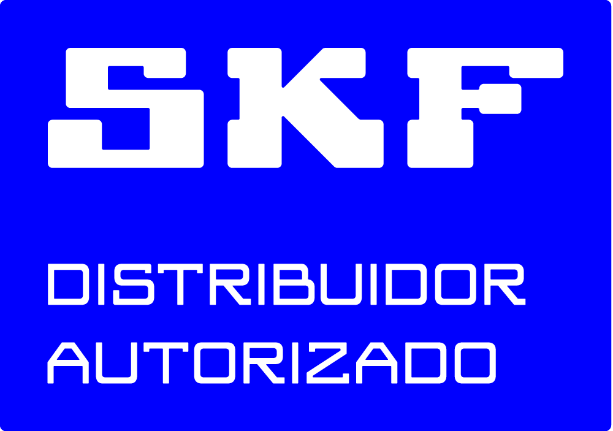
Distribuidor autorizado
Acesso a produtos originais SKF, respaldo técnico e a confiança de uma rede autorizada para mais segurança na sua operação.
SKF na SUECA · Desde 1998
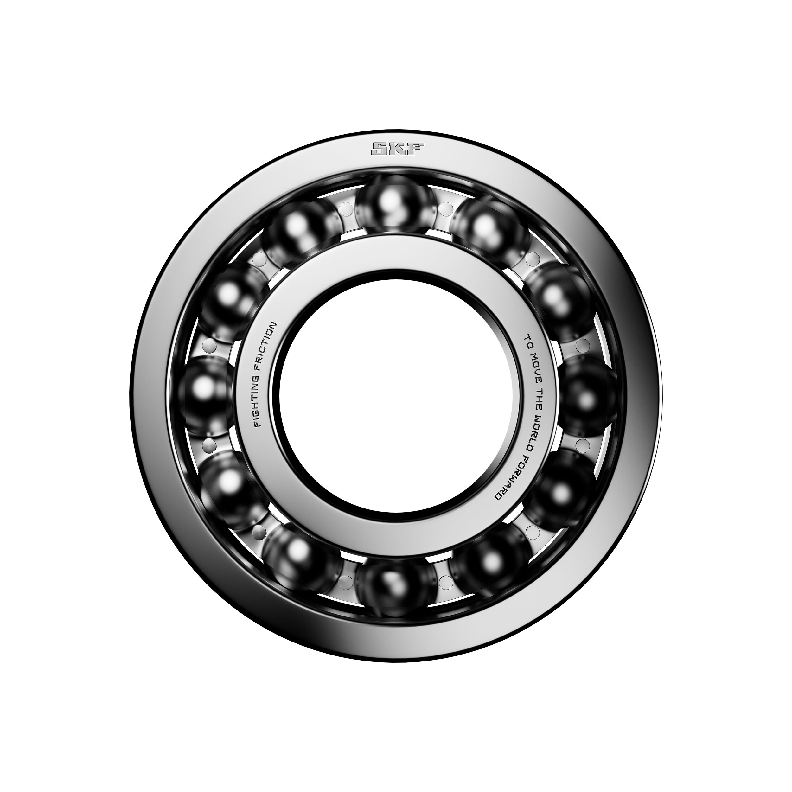
Rolamentos, mancais, graxas, entre outras soluções para aumentar a confiabilidade e a produtividade de seus ativos.
Conheça a segurança de um distribuidor autorizado SKF.
Rolamentos SKF
Tenha a segurança de que suas peças são originais e protegidas contra falsificações.
Em caso de dúvida, utilize o SKF Authenticate
Envie fotos da peça, embalagem e comprovante de compra para verificação pela SKF.
Confie em distribuidores autorizados SKF,
confie na SUECA.
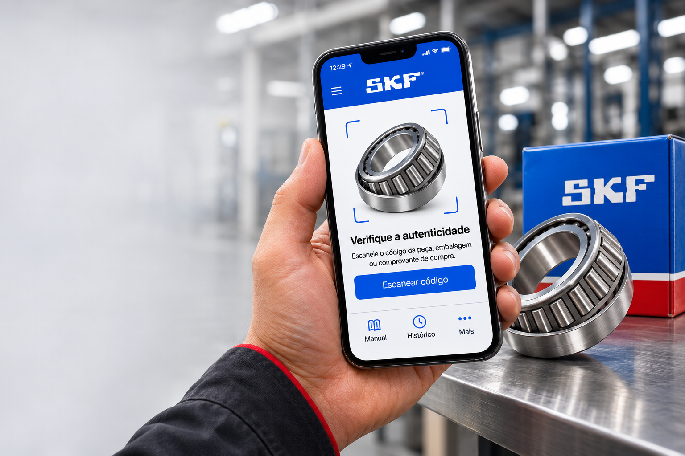
Certificações

Acesso a produtos originais SKF, respaldo técnico e a confiança de uma rede autorizada para mais segurança na sua operação.
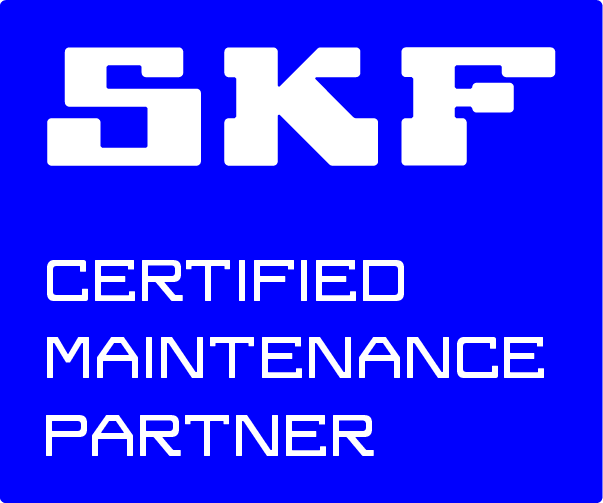
Capacitação técnica reconhecida para aplicar soluções SKF com excelência, boas práticas e foco em performance e confiabilidade.
Disponibilidade de produtos específicos para aplicações no campo, com soluções SKF voltadas ao desempenho e à confiabilidade no ambiente agrícola.
A força da SKF
Explore as partes que compõem um rolamento — como anéis, esferas, gaiola e vedações —, entenda a função de cada componente e conte com a SUECA para encontrar a solução ideal para a sua aplicação, com a qualidade e a confiabilidade da SKF.
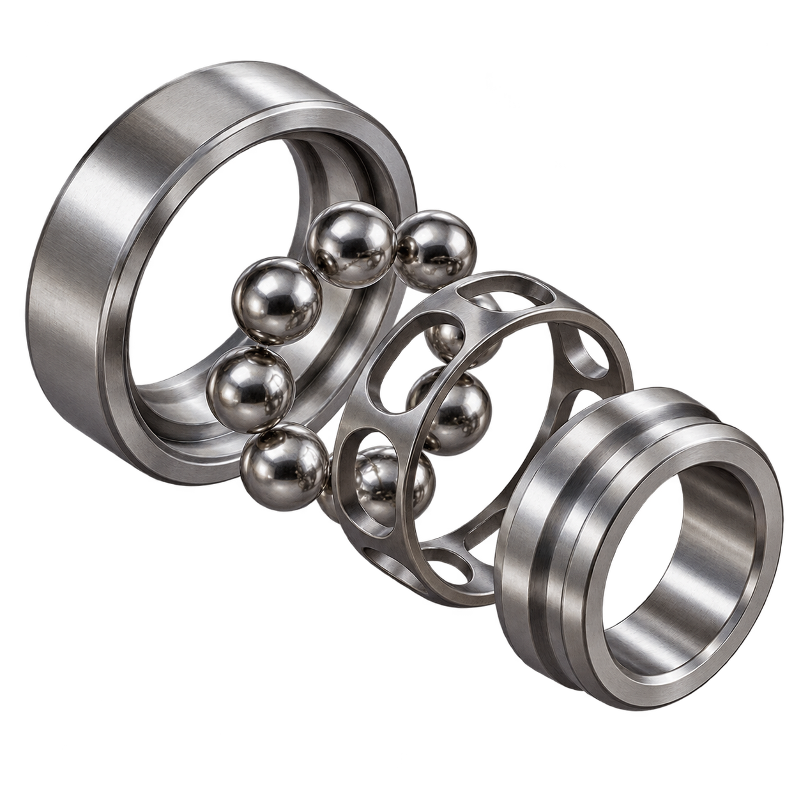
Portfólio SKF
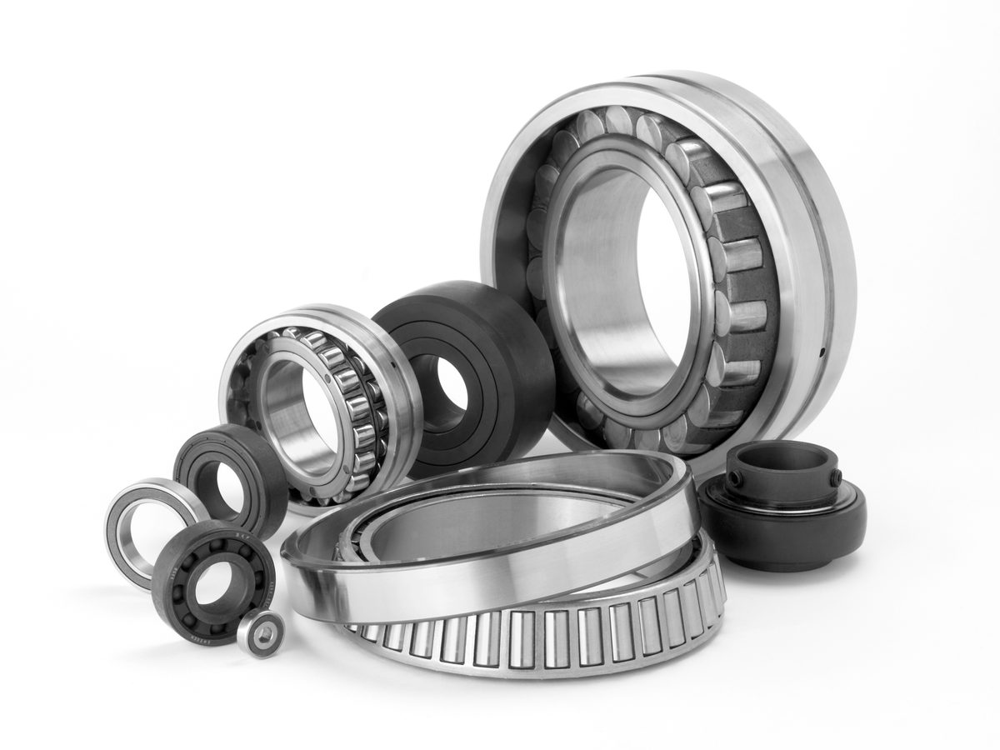
Para diferentes cargas e velocidades.
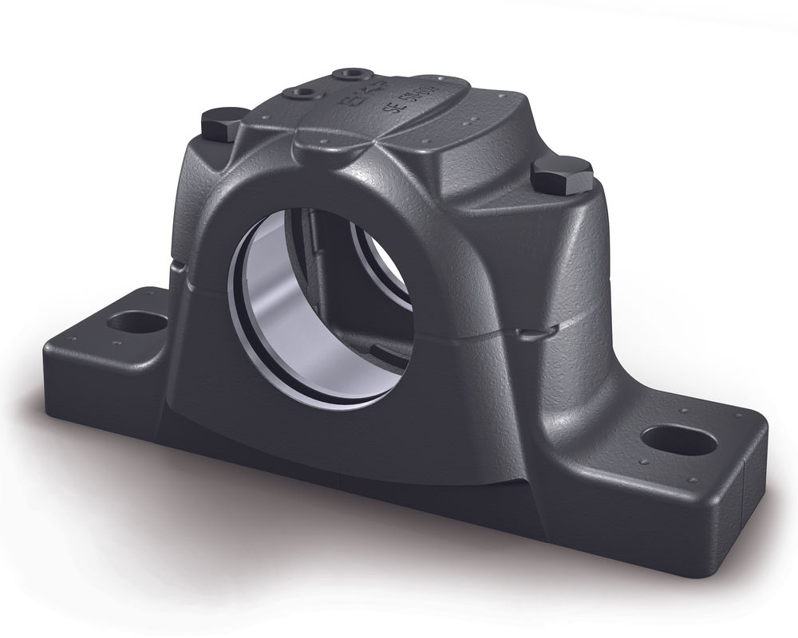
Suporte para conjuntos rotativos.
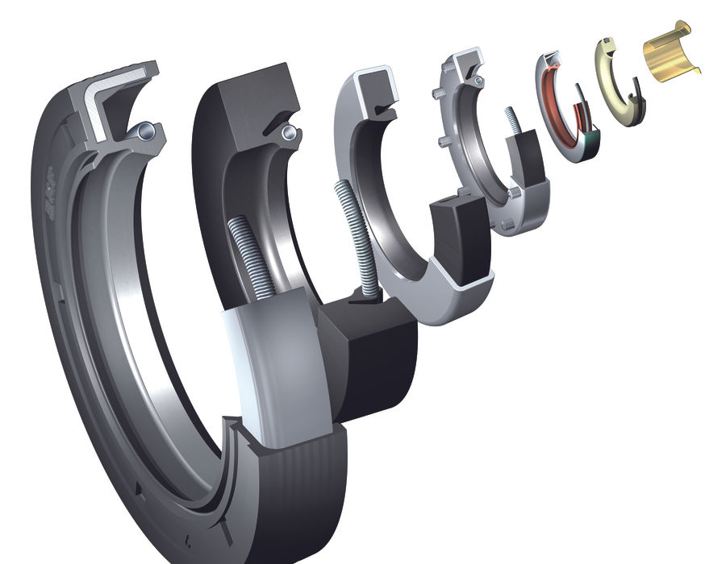
Proteção contra contaminação.
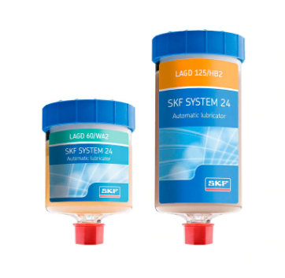
Lubrificação no ponto certo.
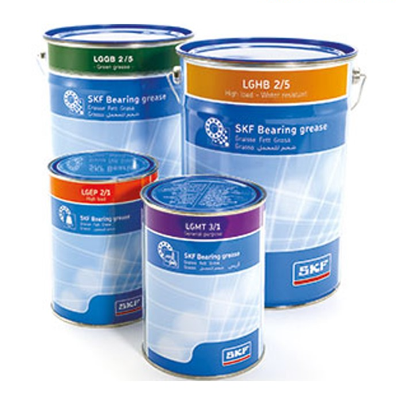
Para cargas e ambientes severos.
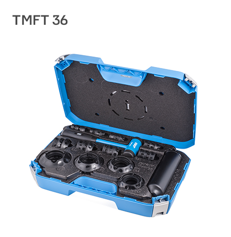
Manutenção com mais precisão.
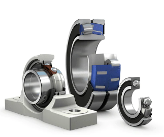
Proteção em ambientes úmidos.
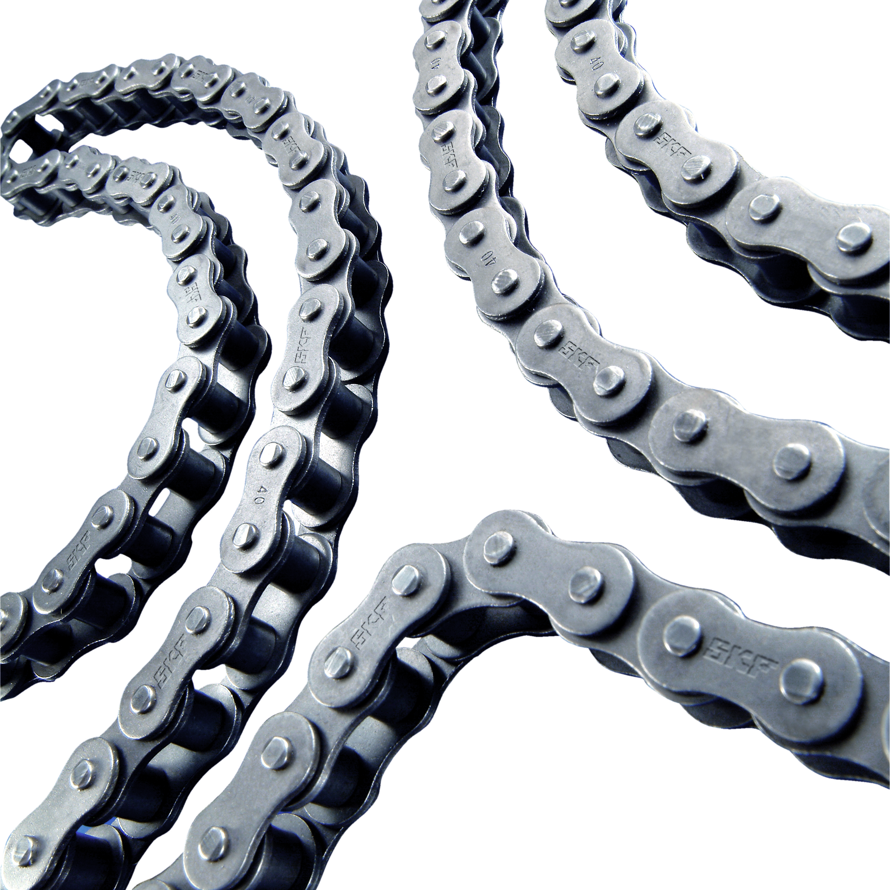
Transmissão de potência confiável.
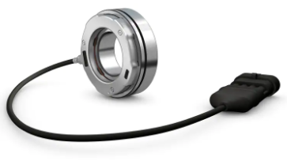
Monitoramento integrado ao conjunto.
Uma aplicação específica pede uma escolha certa.
Solicitar contatoOnde a SKF atua
Da confiabilidade dos equipamentos à eficiência dos processos, a SUECA oferece rolamentos, mancais e soluções SKF para manter a indústria em movimento, com alto desempenho e produtividade.
No campo, cada movimento faz a diferença. A SUECA oferece rolamentos, mancais e soluções SKF para máquinas agrícolas, com resistência, durabilidade e confiabilidade para acompanhar os desafios de cada safra.
Cenas de aplicação ilustrativas.
FAQ
Sempre adquira seus equipamentos em distribuidores autorizados SKF para maior confiabilidade, mas se ainda está com alguma dúvida, utilize o App SKF Authenticate para uma avaliação.
Ruídos anormais, vibrações excessivas, aumento de temperatura e vazamentos de lubrificante podem indicar problemas nos rolamentos. A análise de vibrações e o monitoramento de condição ajudam a identificar falhas antecipadamente, evitando paradas inesperadas e aumentando a confiabilidade dos equipamentos.
As letras e os números presentes na referência de um rolamento SKF formam um código de identificação que informa características como tipo de rolamento, série dimensional, diâmetro interno, vedação, folga interna e particularidades de fabricação.
Por exemplo, no rolamento SKF 6205-2Z/C3:
Os retentores e as vedações SKF ajudam a evitar vazamentos de lubrificantes e impedem a entrada de poeira, água e contaminantes. São essenciais para proteger componentes mecânicos, reduzir desgastes e aumentar a confiabilidade dos equipamentos industriais e agrícolas.
Os sistemas de lubrificação automática SKF fornecem lubrificante em quantidades controladas e intervalos programados. Isso contribui para reduzir falhas, desperdícios e intervenções manuais, aumentando a eficiência da manutenção e a vida útil dos componentes.
O monitoramento de condição acompanha parâmetros como vibração e temperatura para identificar alterações no funcionamento dos equipamentos. Com as tecnologias SKF, é possível detectar sinais de falhas antecipadamente, planejar manutenções e reduzir o risco de paradas não programadas.
A SKF oferece retentores, vedações, rolamentos vedados e soluções de lubrificação que ajudam a proteger equipamentos contra agentes contaminantes. A escolha adequada contribui para reduzir desgastes, aumentar a durabilidade dos componentes e garantir maior confiabilidade em ambientes industriais e agrícolas.
A seleção considera carga, velocidade, ambiente, contaminação, espaço disponível, vedação, montagem e lubrificação. A Sueca pode apoiar a identificação da solução SKF adequada.
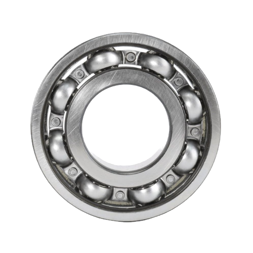
Precisa de apoio especializado?
Cada aplicação tem seus desafios, e encontrar o produto certo faz toda a diferença. Conte com a experiência e o conhecimento técnico da SUECA para escolher a solução mais adequada, com a qualidade e a confiança de um distribuidor autorizado SKF.